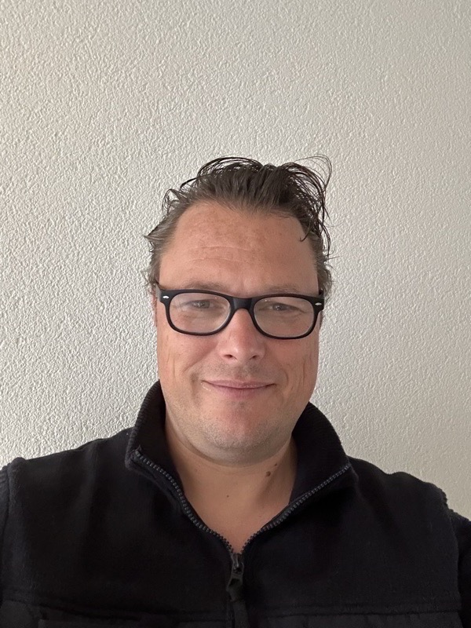

Reinier Lammerts
Ik help organisaties orde scheppen op het snijvlak van business, processen, informatie en IT — door te analyseren, te ontwerpen en te verbinden.
Welkom. Ik ben business architect, procesarchitect en business analist — en werk al ruim twintig jaar op het snijvlak van strategie, processen, informatie en IT. Mijn opdrachtgevers zijn meestal grote organisaties in de rijksoverheid of de financiële sector, maar ook grote corporates als ASML. De vraagstukken zijn steeds anders, de kern is hetzelfde: hoe vertaal je wat een organisatie wil doen naar iets dat ook daadwerkelijk werkt?
Wat me in dat werk drijft is niet het eindproduct op zich — de architectuurplaat, het rapport, de roadmap — maar wat erachter zit. Ik hou van een ingewikkeld vraagstuk: erin duiken, snel grip krijgen op hoe het in elkaar zit, en dan stap voor stap structuur aanbrengen. Het mooiste moment is als een opdrachtgever merkt dat een proces of systeem echt beter werkt, dat het verschil maakt in de praktijk. Dat geeft me meer voldoening dan iets dat alleen op papier klopt.
Buiten mijn werk woon ik samen met mijn vrouw en drie kinderen in Leersum. Je vindt me op de padelbaan, op de fiets, of langs de lijn bij voetbal en hockey. Die afwisseling — analytisch werk en fysieke ontspanning — past bij me.